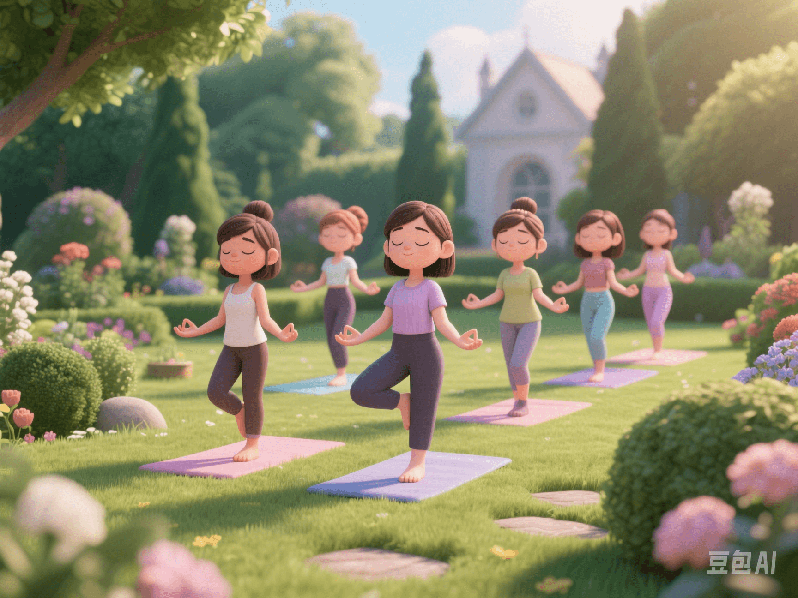

The Complete Guide to Hormonal Balance: The Secret Weapon for Female Endocrine Health
PeaceLove.Top Insights :2025-04-12
🌸 Introduction
In the fast - paced and high - stress modern life, more and more women are starting to pay attention to their hormonal health 💡. Many symptoms, from menstrual disorders and mood swings to skin problems and fatigue, may actually stem from hormonal imbalance 🧬. This article will take you deep into the operating mechanism of female hormones and provide practical adjustment methods to help you regain the balance of your body and mind 💖.
🧠 What is 'Hormonal Balance'?
Hormones are a type of potent 'chemical messengers' secreted by endocrine glands. They are transported through the blood throughout the body and have a profound impact on our growth, mood, metabolism, sleep, libido, and reproductive system 📊.
🌿 Common manifestations of hormonal imbalance:
- Irregular menstruation 🩸
- Severe mood swings 😢😡
- Fatigue and lack of energy 🥱
- Sudden weight gain or loss ⚖️
- Acne or dry skin 🌵
- Insomnia or poor sleep quality 🌙
🔍 Popular Keywords: Why is the Search Volume for 'Hormone Regulation' Skyrocketing?
📈 Data shows that the number of people searching for 'hormonal disorders', 'how to regulate the endocrine system', and 'female hormonal balance' is increasing year by year. Especially among women aged 25 - 45, hormonal problems have become a common health concern. This is not only a physiological phenomenon but also related to quality of life, self - identity, and mental state.
✅ How to Naturally Regulate Hormones? (You Can Do It Without Drugs!)
🍽️ 1. Dietary Regulation: Eat Right, and Your Body Will Thank You
- Consume more Omega - 3 fatty acids (such as flaxseeds and salmon 🐟)
- Increase foods rich in magnesium, zinc, and vitamin B6 (such as pumpkin seeds and leafy greens 🥬)
- Reduce refined sugars and processed foods 🍩 to avoid insulin fluctuations caused by blood sugar spikes
- Properly intake 'phytoestrogens' - such as tofu and soy products (soy isoflavones 🌱)
🧘♀️ 2. Stress Management: Don't Underestimate Your Breath
Chronic stress can cause cortisol (the stress hormone) to remain elevated for a long time, affecting the balance of thyroid and sex hormones. ✨ Recommended methods:
- Meditation/mindfulness practice 🧘♀️
- Deep breathing training 🌬️
- Low - intensity exercises such as walking and yoga 🚶♀️
- Ensure 7 - 9 hours of high - quality sleep per day 🛏️
🏋️♀️ 3. Smart Exercise: Moderate Exercise Activates the Hormone System
- Resistance training (such as squats and dumbbell training) can increase testosterone and growth hormone 💪
- Moderate - intensity aerobic exercises such as brisk walking, cycling, and swimming can help improve insulin sensitivity ❤️🔥
- ⚠️ Note: Excessive exercise (such as excessive high - intensity interval training - HIIT) may disrupt the endocrine system!
🩺 4. Regular Physical Examinations and Functional Tests
- 🧪 Blood tests: Monitor indicators such as estrogen, progesterone, testosterone, insulin, and thyroid hormones
- 📉 Menstrual tracking apps: Record cycle changes to identify potential problems
- 🔬 If possible, conduct hormonal saliva/urine tests for a more accurate analysis of hormonal curve changes
💬 Community Resonance: 'It's Not That I'm Lazy; It's the Hormones!'
Under tags such as #HormoneBalance, #FemaleHealth, and #EndocrineRegulation, more and more women are sharing their experiences of fighting hormonal problems and recovery diaries 📖. From 'unexplained weight gain' to 'uncontrollable irritability and anxiety', their common understanding is that understanding your body is the first step to regaining control of your life.
🎀 Final Tips
- ✅ Remember: Hormonal problems are not a trivial matter, nor are they 'all in your head'
- ✅ You don't need to 'diet' and'stay up late desperately' to prove that you're working hard enough
- ✅ Choosing a healthier lifestyle is the gentlest love you can give yourself 💞
📌 Regulating hormones is not a one - day thing but a journey of patience, understanding, and self - care. Start today, listen to your body, and give it a little patience and care 🌷. You deserve to be your best self ✨.